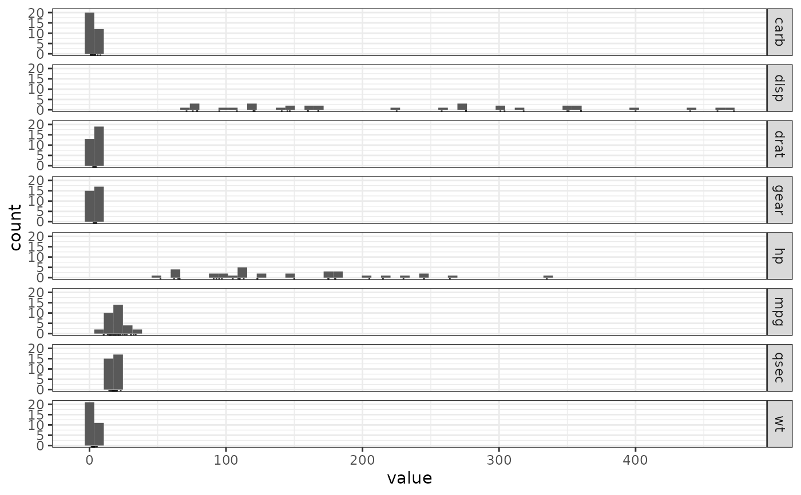

R/e_plot_clean_numeric_nonnum_minmax.R
e_plot_clean_numeric_nonnum_minmax.RdThe variables included together are plotted on the same x-axis scale.
e_plot_clean_numeric_nonnum_minmax(
dat_this,
binwidth = 7,
n_table = 5,
sw_date = FALSE,
sw_plot = TRUE,
lab_title = NULL
)data gathered with selected variables
for histogram
is the number of table values to print
is the value a date?
TRUE/FALSE switch to plot
title before output and for plot
invisible(NULL)
## requires formatting into two columns: "variables" and "values"
dat_this <-
dat_mtcars_e |>
dplyr::select(
model
, tidyselect::starts_with("hp")
, where(is.numeric)
) |>
tidyr::pivot_longer(
cols = -model
, names_to = "variable"
, values_to = "value"
) |>
dplyr::select(
-model
)
dat_this |> e_plot_clean_numeric_nonnum_minmax()
#> # A tibble: 40 × 2
#> # Groups: variable [8]
#> variable value
#> <chr> <dbl>
#> 1 carb 1
#> 2 carb 1
#> 3 carb 1
#> 4 carb 1
#> 5 carb 1
#> 6 disp 71.1
#> 7 disp 75.7
#> 8 disp 78.7
#> 9 disp 79
#> 10 disp 95.1
#> 11 drat 2.76
#> 12 drat 2.76
#> 13 drat 2.93
#> 14 drat 3
#> 15 drat 3.07
#> 16 gear 3
#> 17 gear 3
#> 18 gear 3
#> 19 gear 3
#> 20 gear 3
#> 21 hp 52
#> 22 hp 62
#> 23 hp 65
#> 24 hp 66
#> 25 hp 66
#> 26 mpg 10.4
#> 27 mpg 10.4
#> 28 mpg 13.3
#> 29 mpg 14.3
#> 30 mpg 14.7
#> 31 qsec 14.5
#> 32 qsec 14.6
#> 33 qsec 15.4
#> 34 qsec 15.5
#> 35 qsec 15.8
#> 36 wt 1.51
#> 37 wt 1.62
#> 38 wt 1.84
#> 39 wt 1.94
#> 40 wt 2.14
#> # A tibble: 40 × 2
#> # Groups: variable [8]
#> variable value
#> <chr> <dbl>
#> 1 carb 8
#> 2 carb 6
#> 3 carb 4
#> 4 carb 4
#> 5 carb 4
#> 6 disp 472
#> 7 disp 460
#> 8 disp 440
#> 9 disp 400
#> 10 disp 360
#> 11 drat 4.93
#> 12 drat 4.43
#> 13 drat 4.22
#> 14 drat 4.22
#> 15 drat 4.11
#> 16 gear 5
#> 17 gear 5
#> 18 gear 5
#> 19 gear 5
#> 20 gear 5
#> 21 hp 335
#> 22 hp 264
#> 23 hp 245
#> 24 hp 245
#> 25 hp 230
#> 26 mpg 33.9
#> 27 mpg 32.4
#> 28 mpg 30.4
#> 29 mpg 30.4
#> 30 mpg 27.3
#> 31 qsec 22.9
#> 32 qsec 20.2
#> 33 qsec 20.0
#> 34 qsec 20
#> 35 qsec 19.9
#> 36 wt 5.42
#> 37 wt 5.34
#> 38 wt 5.25
#> 39 wt 4.07
#> 40 wt 3.84
